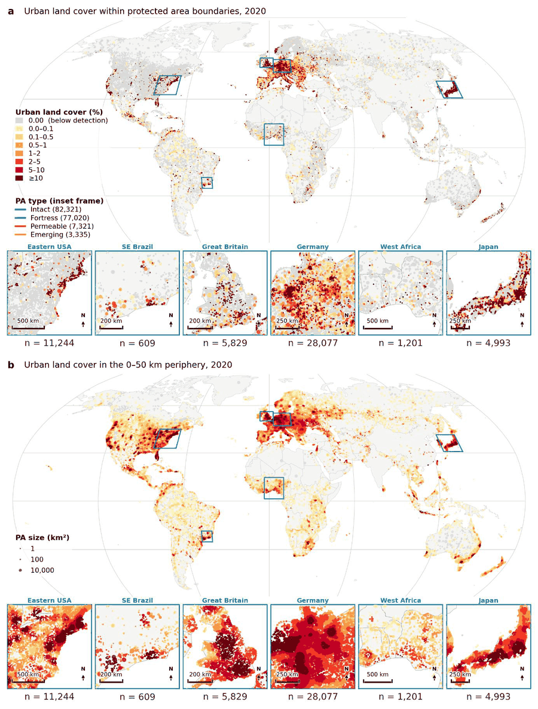

2026
Two-thirds of the global protected areas are exposed to edge urbanizationIn Revision
Environmental research scientist developing quantitative methods for measuring environmental change — and, at Esri, the production spatial analysis and data science tools that put those methods in other people's hands.
My doctoral research produced one of the first global-scale road network growth models, work AGU's Eos covered on publication. The same machinery now drives studies of protected-area isolation, species-range loss, and transport exposure to flooding across Brazil, Indonesia, Nigeria, Bangladesh, and Texas — 13 peer-reviewed articles, three more under review at Nature-family journals, and 33+ conference presentations, held together by a preference for models that take spatial structure seriously and state their uncertainty plainly.
Quantitative methods for measuring environmental change — and the production tools that carry them to the people who need the answer.
10+ years developing quantitative methods for measuring environmental change. The work spans quality assessment of heterogeneous forecast datasets, scenario-based baseline construction, and uncertainty quantification, published across 13 peer-reviewed articles on land change, biodiversity outcomes, sustainability implications, and climate-driven infrastructure risk.
My doctoral research produced one of the first global-scale road network growth models — work AGU's Eos covered on publication — and the same machinery has since gone after protected-area isolation, species-range loss, and transport exposure to flooding across Brazil, Indonesia, Nigeria, Bangladesh, and Texas. Earlier consulting work delivered environmental and social impact assessments and resettlement planning for Asian Development Bank infrastructure projects, and field data collection on climate-driven displacement for GIZ.
At Esri I develop production geospatial and spatial statistics tools, along with the data pipelines, dashboards, and hub sites that deliver analytical results to non-technical users. I hold a PhD in Geography and the GISP certification, and co-convene the AGU Urban Area and Global Change session in 2026.

My work follows a single line of inquiry: how urban expansion and road networks reshape landscapes, and what that change means for the species and people who share them. Alongside the research I design and document the spatial analysis tooling that others use to ask questions of the same kind.
Before joining Esri in 2024 I completed a PhD in Geography at Texas A&M, advised by Burak Güneralp. Earlier came two master's degrees from Iowa State — Community and Regional Planning, and Transportation — with a graduate certificate in GIS along the way, and an undergraduate degree in Urban and Rural Planning from Khulna University. The planning identity runs underneath everything I do.
Recent collaborators include Burak Güneralp and Lee A. Fitzgerald at Texas A&M, M Mahbub Hossain at the University of Houston, and the Oak Ridge National Laboratory Human Geography Group.
Where, how fast, and at what cost the world's cities are growing. Long time-series across Bangladesh, Indonesia, and 19 world regions under SSP scenarios.
The first global-scale road network growth model, featured by AGU's Eos. Forecasting where new roads will appear and what landscapes they will cross.
How urban expansion and roads isolate protected-area networks and threatened species ranges. Brazil, Indonesia, Nigeria, Bangladesh.
How human activities — settlements, roads, infrastructure — interact with biophysical systems. Where pressure accumulates, what couplings emerge, and what those imply for sustainability.
Spatial methods applied to public health. Earlier work mapped COVID-19 spread, examined geospatial methods in research on homeless populations, and reviewed the role of GIS in pandemic decision-making.
Machine learning, statistical, and process-based models for spatial problems. From hedonic regression to XGBoost land-cover classification, AI-based flood susceptibility, and urban–transport coevolution.
The craft underneath the results: multi-product validation against ESA CCI, GHS-BUILT-S and GAUD, multi-criteria and Monte Carlo susceptibility modeling, and accessibility analysis of transit networks.
Neighbours are not independent observations. Distance decay, spatial autocorrelation, and clustering are the signal, not a nuisance to correct away — which is why a global Moran's I or a Getis–Ord surface usually tells me more than the regression coefficient did.
At 169,997 protected areas almost anything is statistically significant, so the p-value carries no information on its own. Effect sizes, confidence intervals, bootstrap resampling, and threshold sweeps go in the paper alongside the headline number.
One land-cover product is a hypothesis. I check results against independently produced datasets, compare model output to FEMA hazard maps and ROC curves, and say plainly where they disagree rather than picking the version that flatters the argument.
Most of what I work on comes back to one question — how do cities reshape the planet? — approached from four directions. If your question sits near any of these, I would like to hear about it.
Where cities have already grown and where they are going next, reconstructed from multi-decadal land-cover series and projected under SSP scenarios — from single metropolitan areas through world regions to the global total. Each scale answers a different question, and I care about keeping those differences visible rather than averaging them into one curve.
Transportation usually enters land-change models as a fixed input. My work treats road growth as something to forecast in its own right, because knowing where new roads appear tells you where forests open and where new hazard exposure accumulates.
What urban and road expansion do to species ranges, Key Biodiversity Areas, and the landscapes immediately outside protected boundaries. Increasingly the interesting signal is at the edge rather than inside the line on the map.
How built systems sit relative to flooding and other hazards, and the methodological questions underneath — scale, product choice, validation, and how to report uncertainty when the sample is large enough to make everything significant.
Beyond the areas above, I am glad to discuss potential collaborations, questions about published work, the graduate school and early-career research journey, and Earth and environmental science research more broadly. A short note on your question and the data behind it helps me reply usefully.